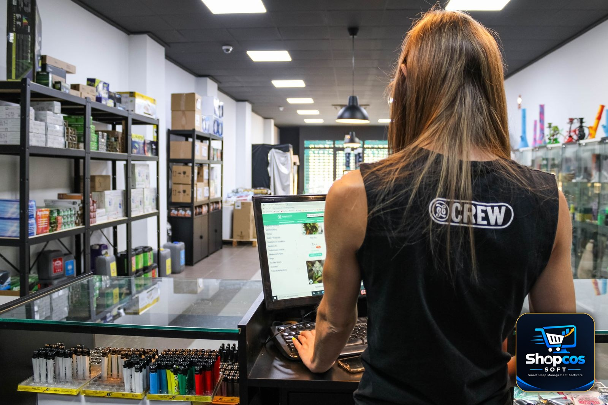

It is nine at night in a general store in Samundri, the shutters are half down, and the owner is doing what thousands of Pakistani shopkeepers do every month: he types "POS software for PC free download" into Google, clicks the first result that looks decent, and installs whatever comes down the wire. The setup finishes, the screen looks impressive, and he goes home pleased with himself. The next morning the problems start arriving in order. The software wants an internet connection his shop does not have at 10 a.m. The trial ends after three days, not the thirty the website promised, and his items are locked inside it. The printer prints half a bill and stops. When he calls the number on the website, nobody answers — because there is no number, only a contact form. By Friday he is back on the calculator, and the "free" download has cost him a week.
None of that was bad luck. Every one of those failures was checkable in ten minutes before the download — and that is what this guide is. POS software for PC means a program that installs and runs on your shop's Windows computer, at your counter, under your control. But "for PC" on a download page can mean three very different things, the price on the page is almost never the price you will pay over three years, and the difference between software that survives load shedding and software that dies with the Wi-Fi is a single question most buyers never ask. Work through the ten checks below before you download anything, and the software you install will be the one your counter actually needs.
Before You Click Download: The 5-Minute Reality Check
Start by getting clear on what you are actually about to install, because vendors use the same words for different products. There are three kinds of "POS software for PC", and they behave nothing alike at your counter:
- A real Windows desktop program. It installs on your PC, stores your data on your PC, and bills with or without internet. This is what most Pakistani shops need, because the counter computer is often old, the internet is often absent, and the electricity definitely is, several times a day.
- A website that calls itself software. You open it in Chrome, log in, and bill in a browser tab. It looks modern and costs little — until the internet drops mid-bill, the browser crashes, or the tab is closed by accident with a half-finished sale inside it. On a shop PC with weak internet, this is a calculator with extra steps.
- A phone app stretched onto a PC. An Android app running in an emulator, or a mobile app with a "PC version" that is really the same small-screen design blown up. Billing on it feels like typing with gloves on, and your printer and scanner usually do not connect to it at all.
Before you download, find the answer to one question on the vendor's own website: "Does this install on Windows and run without internet?" If the page will not say so plainly, that is your first answer. A vendor proud of its offline Windows program puts it in the first paragraph. A vendor selling a browser tab hides it in the FAQ. Our full comparison of the two approaches — offline vs online billing software — walks through what happens at your counter when the internet dies under each kind.
Check 1: Will It Actually Run on Your PC?
The counter PC in a Pakistani shop is rarely new. It is often a five- or eight-year-old machine that already runs the CCTV viewer, a browser with too many tabs, and whatever the last technician installed. Software built for a new laptop in an office will crawl on it — and a billing screen that takes six seconds to open is a queue forming at your counter. Check the requirements before you download, not after:
| What to check | Minimum that works | Comfortable for a busy counter |
|---|---|---|
| Windows version | Windows 10 | Windows 10 or 11, fully updated |
| Memory (RAM) | 4 GB | 8 GB |
| Free disk space | 2 GB free | 10 GB free on an SSD |
| Processor | Any dual-core from the last 10 years | Intel i3 or better |
| Screen | 1366 × 768 | 1920 × 1080 |
Finding your own specs takes thirty seconds: press the Windows key, type "About your PC", and read the processor, RAM and Windows version on the screen that opens. If your machine is below the minimum, you have two honest options — upgrade the PC first, or choose lighter software — and the wrong option is to install heavy software anyway and blame the counter staff when it lags. Two more questions belong here: does the installer need an administrator password (on a shop PC, that password often lives with a technician who is not around), and does it demand a restart in the middle of your working day? Both are worth knowing before the download, not during the evening rush.
One more thing to check on this page: the download size. A billing program should be tens or low hundreds of megabytes. A "POS software" download of 2 GB is usually a game engine, a bundled browser, or something else entirely wearing your software's name — check what it actually is before you run it.
Check 2: Does It Really Work Without Internet?
This is the check that matters most in Pakistan, and the one vendors word most carefully. "Works offline" on a sales page can mean anything from "the whole program runs on your PC" to "the login page loads offline and then nothing else does". Load shedding does not ask whether your software is ready. Neither does a PTCL outage, a mobile data package that expired yesterday, or a router that needs restarting while a customer waits with cash in hand.
Here is the sixty-second test that settles it, and you should run it during the trial, before you pay anyone anything: install the software, add five items, and make a bill while the internet is on. Then pull the internet cable out — or switch off the Wi-Fi — and make another bill. Print it. Add a new customer to the khata while you are offline. Then reconnect and check whether the offline bill is still there, in the day's total, with the right stock numbers. Software that truly works offline will not notice the cable is gone. Software that only claims to will freeze, show a spinning circle, or quietly lose the second bill.
Ask the vendor three exact questions, and judge them by how directly they answer: does billing work with no internet at all? Does stock decrease and khata update while offline? And if the internet stays off for a whole day, is every bill still recorded when it comes back? A straight "yes" to all three is the only passing grade. Anything with "mostly", "in most cases" or "after sync" is a no with better manners.

Check 3: Where Does Your Data Live — and Who Can Take It Away?
Your items, your customers, your udhar balances, your three years of sales history: that is your shop's memory, and the most expensive thing in your shop after the stock itself. Before you download, find out where that memory will live. There are only two honest answers, and each has a price:
- On your own PC. Your data is a file on your computer. You can copy it, back it up to a USB, and keep billing if the vendor's company closes tomorrow. The trade-off is yours to manage: you must back it up, because nobody else will.
- On the vendor's servers. Your data lives in their cloud. Your shop stops working the day you stop paying, and if the company closes, raises prices, or locks your account over a billing dispute, your own sales history is on the other side of their login screen.
Either model can be fine — but you must know which one you are buying, because the download page will not volunteer it. Ask these four questions before installing: Can I export my full items, customers and khata balances to Excel whenever I want, without paying extra? Can I back up with one click to my own USB or drive? If I stop paying, can I still open my old bills and print them? And if the company disappears, does my shop keep billing? If export costs extra, or old bills vanish when the subscription ends, you are not buying software — you are renting your own records back from someone, one month at a time. Our guide on whether a khata book app is safe asks the same questions about phone apps, and the answers matter even more on a PC, where years of data accumulate.
Check 4: Read the Trial Before You Trust It
Almost every POS download starts with a free trial, and the trial is where most shops get trapped — not by the software, but by the terms they never read. A trial is only useful if it lets you test the real counter, and the real counter test needs at least a week: one full cycle of busy days, a load-shedding afternoon, a staff member using it, and a day closing. A three-day trial ends before you have learned anything. Read these five lines before you install:
- How many days, exactly? Seven days is the honest minimum for a real test. Three days is a demo wearing a trial's clothes.
- Does it ask for a card upfront? A trial that needs your debit card before you have billed a single rupee is not a trial — it is a subscription with a delayed start date, and the "free" part ends the moment you forget the cancellation date.
- Is it the full software? Some trials quietly disable the features you actually need to test — barcode printing, khata, backup, multi-user — so the trial feels fine and the paid version feels like a different program. If the trial is limited, the vendor should say which parts are locked.
- What happens on day eight? Does the software stop opening? Do your items stay readable? Can you export everything you entered? A trial that holds your data hostage on expiry is charging you for your own work.
- Is there a real person to ask? A trial with a WhatsApp number that answers in minutes is a company. A trial with only a contact form is a website.
Run the trial on your real counter, with your real items, during your real rush — not on a quiet Sunday with five test products. A trial tested on pretend data proves nothing. And set a phone reminder for the day before it ends, so the decision to pay or walk away is yours, made calmly, not theirs, made by auto-renewal.
Check 5: The Price After the Download
The download is free. The software rarely is. What matters is the total you will have paid after one year and after three years — and that number is almost never on the download page. Vendors quote the smallest possible number: per month, per user, before tax, for the first year only. Do the multiplication yourself before you install:
| Plan | Quoted price | After 1 year | After 3 years |
|---|---|---|---|
| Monthly, Rs 1,500/month | Rs 1,500 | Rs 18,000 | Rs 54,000 |
| Monthly, Rs 2,500/month | Rs 2,500 | Rs 30,000 | Rs 90,000 |
| Monthly, Rs 5,000/month | Rs 5,000 | Rs 60,000 | Rs 180,000 |
| One-time licence, Rs 40,000 | Rs 40,000 | Rs 40,000 | Rs 40,000 |
The number to remember: at Rs 1,500 a month you pay Rs 54,000 over three years — Rs 14,000 more than a Rs 40,000 one-time licence — and that is before the renewal price rise almost every monthly plan carries in its second year. At Rs 2,500 a month the three-year total is Rs 90,000: more than double the one-time price. The "cheap" monthly plan is only cheap if you measure it in months.
Then hunt for the five costs the headline price hides: a per-user or per-counter fee (two counters can double the bill); a per-branch fee when you open a second shop; charges for SMS or WhatsApp bills; paid support after the first month; and a renewal price that is higher than the first-year price. Add them all, multiply by 36, and compare that number — not the headline — with the one-time price. Our full breakdown of monthly subscription vs one-time payment does this maths for the Pakistani market in detail, and the POS software cost guide lists what each shop size should honestly budget.
Check 6: Will It Talk to Your Printer, Scanner and Drawer?
Software that cannot print is a very expensive notepad. The counter hardware you already own — or plan to buy — has to work with the program on the first day, not "in a future update". Before you download, check the software against each piece of hardware, and test it during the trial with the actual devices on your counter:
- Thermal receipt printer. The standard in Pakistan is the 80mm printer; some small counters use 58mm. The software must let you pick the paper width, set the shop name and footer, and print a bill that fits — not one that cuts off the total on the right edge. Print a real bill in the trial and read it like a customer would.
- Barcode scanner. Any USB scanner should work like a keyboard — scan a barcode, and the item appears on the bill. If the software needs a special driver or a specific scanner brand, find out before you pay, and budget for it.
- Cash drawer. The drawer should pop open when a cash bill finishes. Test it. A drawer that only opens with a key is a queue at your counter every evening.
- Weighing scale and label printer. If you sell loose items by the kilo, check whether the scale connects. If you print your own barcode labels, check the label size settings.
- UPS and power cuts. The software should survive a power cut without corrupting its database. That is a backup question as much as a hardware one: ask what happens to the last bill if the PC dies mid-print.
Price the full counter while you are at it — PC, printer, scanner, drawer and UPS together — because the software price alone tells you nothing about the setup cost. Our guide to billing machine prices in Pakistan prices every piece of the counter in rupees, including the three complete budgets shops actually buy.
Check 7: Can Your Staff Actually Use It?
The person who will use this software ten hours a day is probably not you. It is the boy at the counter, or the salesman who has never used a computer for anything but YouTube. Software that needs a manual is software your staff will work around — and every workaround is a wrong bill, a missed entry, or a queue. Judge the software the way your staff will: hand it to the least computer-friendly person in your shop during the trial and watch, without helping, while they make a bill, take an udhar payment, and close the day.
What to look for: buttons big enough to hit without aiming; item search that finds "atta 5kg" from typing "att" instead of demanding the exact name; Urdu or Roman Urdu labels where the staff reads them; a bill screen that shows the total in large numbers before the customer pays; and an undo or void that fixes a mistake in one click instead of a phone call to support. Ask how long training honestly takes — a day is a good answer, a week is a warning — and whether there is a simple cheat sheet for the counter. If the vendor's own demo video needs fifteen minutes to explain one bill, your evening rush will explain the rest.
The 7 Red Flags That Mean “Don’t Download”
Some downloads should never reach your counter PC at all. If you see any of these, close the tab — the software is not worth the risk, however good the screenshots look:
- "Free full version" or "cracked" downloads. A billing program that handles your cash should never come from a download site offering it free. Cracked POS software is one of the oldest ways to put a keylogger or a data thief on a shop PC — it watches every bill, every password, every Easypaisa login. If a vendor's real price is Rs 40,000, nobody is giving it away for free out of kindness.
- No company name, no address, no phone number. A real software company has a real address and a WhatsApp number that answers. A download page with only a Gmail address and a contact form is a person, not a company — and persons disappear.
- The installer asks to turn off your antivirus. No honest program needs that. It is the single clearest sign the file is not what it claims to be.
- Reviews that all sound the same. Ten five-star reviews posted in the same week, all saying "best software", none mentioning a single shop, feature or problem — those are written by the seller. Real reviews mention specific things: the printer model, the load-shedding test, the support reply time.
- Payment only by untraceable methods. If the only way to pay is a personal Easypaisa number with no invoice, no company account and no receipt, you have no proof you bought anything — and no one to call when the licence stops working.
- It demands your data before it shows you anything. Software that wants your full stock list uploaded to its servers before the trial even starts is collecting your business, not serving it.
- The website was registered last month. A billing partner should have a history. A company with no history, no customers you can check, and no shop you can visit is asking you to trust a stranger with your shop's memory.
The 10-Minute Test: Install It Like a Shopkeeper
Once a download passes the checks above, test it the way your shop will actually use it — not the way the demo video does. Put ten minutes aside, use your real items, and run this exact sequence:
- Install it. Time the install. Note whether it asks for anything strange — antivirus off, extra toolbars, a second program you did not ask for.
- Add ten real items. Your fastest sellers, with real rates. Time how long ten items take. If ten items take twenty minutes, two thousand will take a week.
- Make three bills. One cash, one udhar, one with a discount. Print all three. Read the printouts.
- Pull the internet. Switch off the Wi-Fi and make a fourth bill. If it fails, the trial is over.
- Close the day. Run the day closing or sales report. Does the cash match what you took? Is the udhar on the report?
- Back it up. Find the backup button, make a backup to a USB, and check the file exists. If you cannot find the backup in two minutes, it does not exist for practical purposes.
- Ask support one question. Message the WhatsApp number with a real question and time the reply. Support that answers during a trial answers after a purchase. Support that does not answer during a trial will not answer after one either.
Score it honestly: a program that passes all seven steps on your real counter is worth paying for. One that fails the offline bill or the backup has failed the only test that matters, however beautiful its dashboard is. If you want a second opinion before deciding, our guide to choosing POS software in Pakistan covers the same decision from the buyer's side, including the questions that separate a vendor from a reseller.
How shopcos soft Answers Every Check on This List
This guide was written to be used against any software — including ours. So here are our answers to the same ten checks, in the same order, so you can hold us to them:
- What it is: a real Windows desktop program that installs on your shop's PC. Your data stays on your own computer, and billing works with no internet at all — load shedding changes nothing at the counter.
- Will it run on your PC? It runs on Windows 10 and 11 on ordinary counter PCs — 4 GB of RAM is enough, 8 GB is comfortable — and the installer is a normal setup file, not a 2 GB mystery.
- Really offline? Yes. Pull the cable mid-bill and keep billing; stock, khata and day closing all update locally, and nothing is lost when the internet returns.
- Your data: yours, on your PC, exportable to Excel whenever you want, with automatic daily backups. Stop paying and your old bills still open — a licence expiry blocks new billing, it never deletes your records.
- The trial: a full 7-day FREE trial of the real software — no card upfront, no locked features — and a WhatsApp number that answers in Urdu.
- The price: one-time, plans from Rs 25,000. No monthly fee, no per-user fee, no renewal rise — the number you pay is the number you keep.
- Your hardware: 80mm and 58mm thermal printers, USB barcode scanners, cash drawers, and bill printing that fits the paper. Test it all in the trial week.
- Your staff: big buttons, simple flows, Urdu labels, and a one-day training plan — built for the boy at the counter, not for an IT department.
- Red flags: none of the seven. Real company, real address in Samundri, real WhatsApp support, invoices for every payment, and a download only from shopcos.shop.
- The test: run the seven-step test above on the trial. If it fails any step, do not buy it — that is what the trial is for.
Try it on your own counter for a week, with your own items, and judge it on your busiest evening. That is the test POS software for PC has to pass, and it is why we offer a 7-day FREE trial with plans starting at Rs 25,000, one-time. Questions first? Message us on WhatsApp at 0326 4025618 — Urdu mein baat ho jayegi.
The Bottom Line
A download takes ten minutes. Living with the software takes three years. The shops that regret their POS software almost never regret the program itself — they regret the things they did not check before installing it: the trial that ended in three days, the "offline mode" that needed Wi-Fi, the data that lived on someone else's server, the monthly price that doubled the one-time price by year two, the printer that never printed. Every one of those regrets was a ten-minute check away from being avoided.
So before your next download, run the list: confirm it is a real Windows program, confirm it runs on your actual PC, pull the internet cable and bill anyway, ask where your data lives and how you get it back, read the trial terms, multiply the monthly price by 36, print a real bill on your real printer, and hand it to your least technical staff member. The software that passes all of that on your counter is the software to buy. The one that fails any of it is not a bargain at any price — it is a week of your life, a counter full of queues, and a shop's memory in someone else's hands. Download carefully, test honestly, and let the counter decide.
Photo credits: Counter with cash register and computer screen in a cafe photo by Vuong Vuong · Retail worker using a computer at a store counter photo by GB The Green Brand · Cashier using a payment terminal and laptop at a retail counter photo by Kaboompics — all via Pexels.